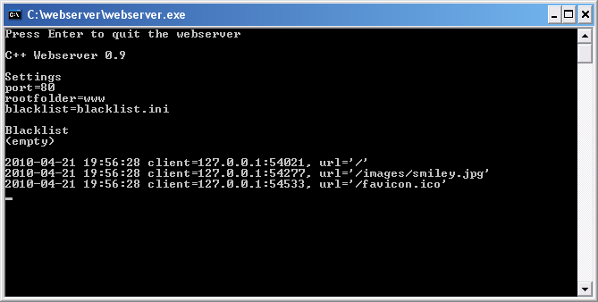
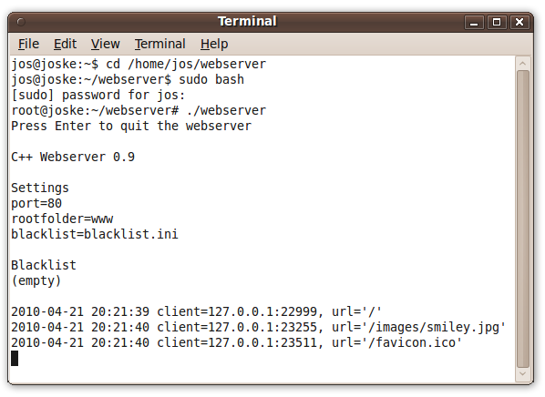
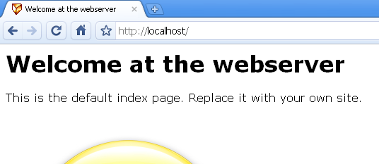

C++ Webserver
This is a small and cross platform webserver (Windows and Linux). It is written in C++ Using the CodeBlocks IDE. You are free to use this code as you like.
Features
- Share files and folders via HTTP
- Synchronously serve multiple connections
- Settings file with customizable port and root folder
- Blacklist of ip adresses
- Creates log files
Download
Download the webserver and sourcecode here. The download includes executables for both Windows and Linux.
 webserver_crossplatform.zip (265kB)
webserver_crossplatform.zip (265kB)
Usage
To start the server on Windows: doubleclick on the executable webserver.exe. After that, open a browser and go to http://localhost.
To start the server on Linux: open a command line, go to the folder with the executable, and enter ./webserver . After that, open a browser and go to http://localhost.
Put your html site in the rootfolder (www by default). There is a file index.html placed there already for you to get started.
You can find and change settings in the file settings.ini. The default port is 80, and the default rootfolder is www. Note that the webserver can only use port 80 if port 80 is unused. Furthermore, you may need administrator rights to open port 80 on linux. Alternatively, you can change the port number in the file settings.ini to for example port 8080. In that case you have to enter http://localhost:8080 in your browser to go to the webserver.
Screenshots



Code
The webserver code demonstrates cross platform C++ coding regarding:
- HTTP protocol
- Sockets
- Threads
- Parsing data
- Files and directories
- Logging
Limitations
- Files larger than 2.14 GB are not supported
- Does not support downloading a part of a file (a range)
- Cannot (yet) run as a deamon / service.
- No HTTPS or SSL, just plain HTTP
- No authorization options
Jos de Jong
April 2010